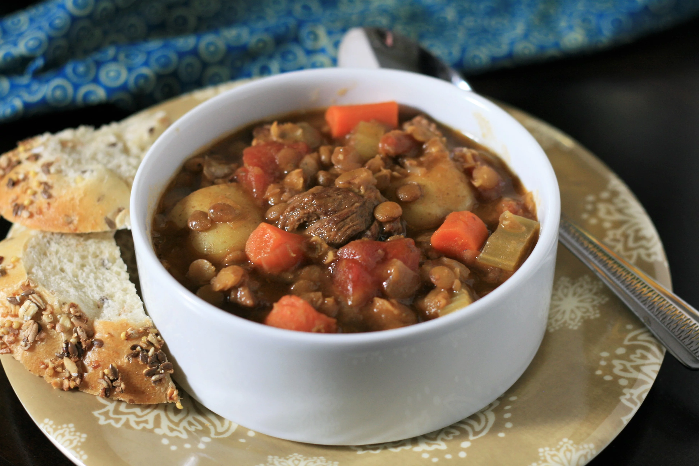

Beef and Lental Soup

There is no better way to start a meal!
What better way to start your meal than with a warmcup of soup? Today we will learn that making your own beef and lental soup may just be something you were wishing you did the whole time!
Ingredients
- 2 tablespoons all-purpose flour
- 1 pound flank steak, cut into 1/2-inch cubes
- 2 tablespoons oil, or more as needed
- 4 carrots, chopped
- 1 onion, diced
- 1 stalk celery, thinly sliced
- 2 cloves garlic, minced
- 1 (14.5 ounce) can diced tomatoes
- 1 cup dry lentils
- 4 cups beef broth
- 2 teaspoons dried rosemary
- 11 ounces baby potatoes with skin
- 1 pinch salt and freshly ground black pepper to taste
Directions
- Pour flour into a shallow bowl and dust steak with flour. Heat oil in a large skillet over high heat and sear beef on all sides until browned, 3 to 5 minutes. Remove from the skillet and set aside.
- Add carrots, onion, celery, and garlic to the skillet and cook until softened, about 5 minutes. Add more oil if necessary.
- Add tomatoes with juice, lentils, beef broth, rosemary, and browned beef pieces to the skillet and stir well. Reduce heat, cover pot halfway with a lid, and simmer for 40 minutes.
- Add potatoes to the skillet. Simmer until lentils and potatoes are soft, about 20 minutes. Season with salt and pepper.